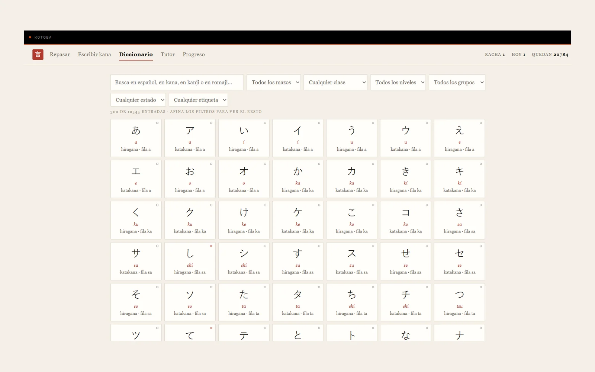

Kotoba
Kotoba is how I'm learning Japanese from zero with spaced repetition: both kana syllabaries and the whole JLPT, N5 to N1 (vocabulary, kanji and grammar), glossed in Spanish and fully offline. The bet I keep making everywhere holds here too: nothing leaves the machine, and nothing comes in either: not a font, not a CDN, not a dictionary API. The library server is Python's standard library, the store is SQLite, the screen is one HTML page. No pip install, no npm, no virtualenv, nothing fetched at startup. It should still run in two years with nobody maintaining it.
The pedagogical decision underneath it is that an item is not a card. 食べる is asked in both directions and each direction carries its own state. Knowing what 食べる means is not the same as being able to say “eat” in Japanese, and folding them into one card is exactly what stops you noticing the gap. That doubles the deck by design (10,545 items become 20,785 cards).
In four days it went from 1,863 to 20,785 cards, roughly eleven times bigger, without a single database migration, because a card that has never been seen has no row. Being new is “there is nothing written about it”. That is why the growth cost nothing. The vocabulary itself comes from crossing Jonathan Waller's JLPT lists against JMdict with Spanish glosses. Waller's lists already carry the JMdict entry number, so the join is a key lookup rather than a guess by (spelling, reading), and 95.5% of the JLPT words come back with a Spanish definition, and the ones that don't are left with their ugly English gloss on purpose, so you can see which are missing.
A few decisions are settled and not worth reopening. SM-2, not FSRS: FSRS is more accurate but needs an optimiser trained on thousands of my own reviews that don't exist yet, so day one would be FSRS with someone else's parameters, which is SM-2 with more code, and srs.py is isolated so it can be swapped once there's real history. No quotas: a cap protects you from four-hundred-card sessions but also decides for you when you've studied enough, and that isn't the program's call. The day starts at 04:00, not midnight, so a late-night session doesn't split the streak in two. And the model never writes romaji: it's asked only for the kana reading, the one thing it knows and the code doesn't, and romaji.py does the transcription, so a model slip shows up in the reading, which you can see, not in the romaji, which is what fills the screen.
Twenty thousand cards and the search still feels instant. mazo.py caches seeds, cards and searchable text; the cost was never scanning, it was transcribing: the search box was calling romaji.de_kana() over eight thousand readings on every keystroke, throwing the result away and doing it again on the next. Dictionary search dropped from 188 ms to 11 ms with six times more material. The comment that once said an index would be “complexity bought ahead of a problem that doesn't exist” was right at nine hundred items and wrong at ten thousand, and the assumption was written down, which is what let me find it when it broke.
There's an Android APK, and it's the same Python: the server runs inside the app on a thread and the screen is a WebView pointed at 127.0.0.1. No native UI on purpose: that would be two versions of the same screen drifting apart the moment either is touched. It's viable only because Kotoba has not one pip dependency; putting CPython in an APK is easy, putting compiled ARM wheels in one is where the attempt usually dies. It builds in CI and runs 229 tests before it compiles.
- Stack
- Python standard library, SQLite, HTML · Chaquopy APK
- Status
- In use on laptop and phone
- Year
- 2026

Next: Armario